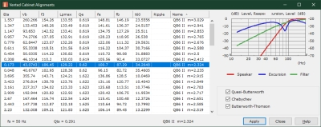
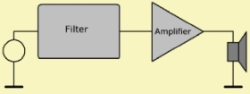

LE Tools - Bassunit Alignments
| Home | LE-Part | Bassunit | Bassunit Tool Form |
 |
It can be challenging to find parameters of good performance. One effective and fast method to arrive at a suitable setting is by means of filter alignments. The Bassunit is tuned to the transfer function of these filters. Then well-known general characteristics, such as bandwidth, resonance behavior etc. of these functions are passed to the speaker-system. For selection a list of meaningful alignments is generated and can be applied to the loudspeaker model. The catalog is built up according to the given driver data.
The model of the Bassunit is derived in a way that its transfer function of sound pressure is identical to a polynomial high-pass. Because of this the Bassunit model is an approximation. The order of the alignment depends on the system:
| Speaker | Order of Speaker | Order of Filter | Order of Alignment |
| Closed | 2 | 0 | 2 |
| Closed | 2 | 2 | 4 |
| Vented | 4 | 0 | 4 |
| Vented | 4 | 2 | 6 |
 |
The speaker, its enclosure and its radiation can be complemented by an electric filter which is a high-pass of second order. This filter is assumed to be somewhere in the signal path, preferably in font of the end-stage amplifier. If designed correctly this high-pass effectively limits excursion whilst maintaining output bandwidth.
The list of the alignments gets updated automatically if you modify one of the parameters of the speaker. At the right-hand side you can select which alignment family is included.
An example is given at \Akabak Examples\Direct Sound\Bassunit vented filtered.akp
Note, work in progress...
Output Parameters
The table is a catalogue of possible parameters for the speaker, its enclosure and the electric high-pass filter. Each alignment would tune the speaker system in a way that following performance parameters can be expected.
Lpmax is the related sound pressure assuming free-field radiation conditions. Lpmax is calculated from the amplitude response of the membrane excursion. The maximum of this function yields the highest amplitude of excursion. If there is a high-pass filter then this maximum can be typically found near the fundamental resonance of the speaker fs. Otherwise the maximum is asymptotic at zero frequency. Eventually, the maximum is scaled by the specified parameter Xmax of the driver. Xmax specifies the maximum excursion the speaker can perform without producing distortion.
f3 is the cut-off frequency of the sound pressure response. At f3 the level is down by 3dB compared to the level at high frequencies.
t60 is a reverberation-time by which the sound pressure level dropped by 60dB after the signal has been switched off. For the calculation of t60 the transfer function is decomposed into blocks of second order. Form the block with the highest quality factor t60 is calculated. The reverberation-time should be short.
Ripple reports on the level-difference of the largest peak in the sound pressure response.
Alignments
Quasi-Butterworth (QB)
This group of characteristic curves is related to the Butterworth filter function
and, so to speak, inherits some of the characteristics of the Butterworth function. Butterworth
filters have the flattest possible amplitude response and thus have the greatest possible
bandwidth without showing an amplitude magnification. The transition from the attenuation
band to the pass band is very steep. This is associated with high quality-factors.
For a high-pass filtered vented loudspeaker system
the family of Quasi-Butterworth functions can yield alignments of well controlled
excursion, broad sound pressure bandwidth and relatively small enclosure.

The left formula is the squared amplitude response of a Butterworth high-pass of order n. The right function is the Quasi-Butterworth high-pass. The coefficient C2n-2 yields a range of alignments. If C2n-2 < 0 then there would be a peak in the response. If zero then its identical to the Butterworth curve. If C2n-2 > 0 then we have a smooth transition from stop- to pass-band. Ω = ω/ω0 is the normalized frequency variable. The mapping of the amplitude response to the transfer function of the QB-alignment can be tricky, see [38, 39].
Chebyshev (CH)
Filters with a rippling Chebyshev setting (k<1) are extremely steep in the attenuation
band. The pass band has a uniform ripple. Based on the loudspeaker enclosure, a
considerable bandwidth extension is in some cases obtained. The critical frequency f3
may be up to an octave below the driver resonance. Rippling Chebyshev settings, however,
are problematic in most cases. On one hand it is difficult in practice to produce the
very high resonance qualities on the other hand these characteristic curves lead to an
extreme diaphragm excursion, so that the bandwidth extension is at the cost of the load
capacity (principal of unsharpness).
In the non-rippling Chebyshev settings (k>1), on the other hand, the sound level graph
has a rounded transition characteristic.
Butterworth-Thomson (BT)
This group of filter functions glides from the Butterworth function (M=0) to the Bessel function (M=1). Butterworth filters have a flattest possible amplitude response and thus have the greatest possible bandwidth without manifesting an amplitude magnification. Instead, their group delay curve has a intense, selective delays. The Bessel filters, on the other hand, have a flattest possible group delay curve (as low-pass), but with a highly rounded transition characteristic in the reproduction curve of the magnitude. Butterworth-Thomson characteristic curves represent a compromise between the two extremes. The greater the factor M of the characteristic curve, the better is the build-up and decay characteristic of the loudspeaker system.
After the evaluation, the characteristic curves can be selected in the list. The name of the characteristic curve is displayed at the top right-hand side in the dialog. The name consists of the abbreviation of the type of characteristic curve, the pole class, the order and the alignment factor. For example: BTI 4 M= 0 designates a 4th order Butterworth-Thomson characteristic curve, pole class 1, and the characteristic curve factor is M=0 (Butterworth curve) (see [38]).